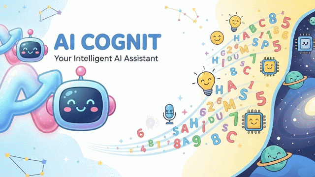
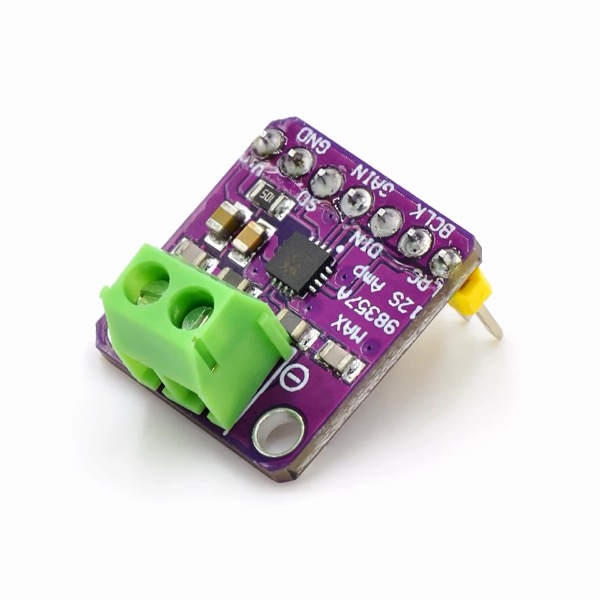
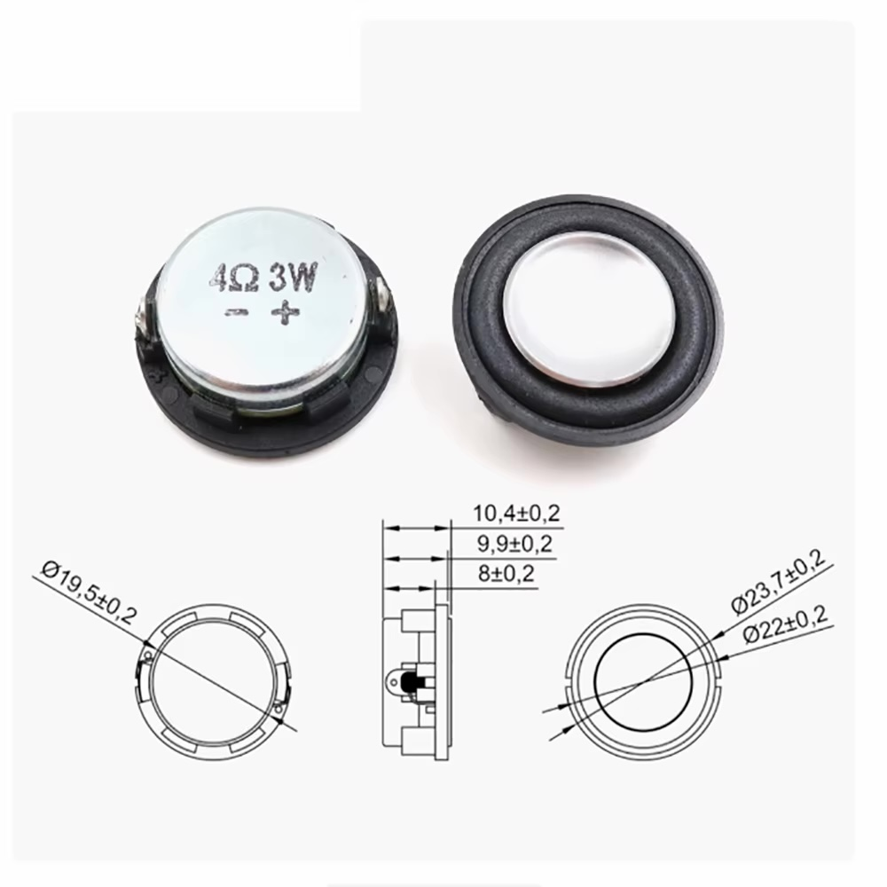
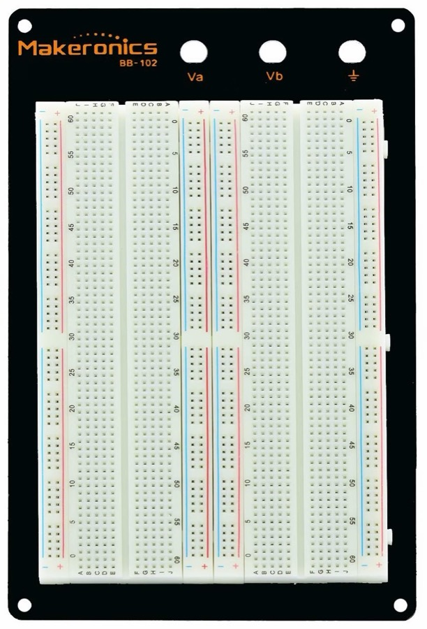

Build Your Own Talking Robot Friend!
Push a button, ask any question, and your robot talks back!
You will build it yourself with real electronics.
1What are we making?
Press a button, ask a question, and your robot answers out loud!
Your robot has a tiny brain. To be super smart, it phones a helper on the internet called Gemini.
2How does it work?
- Press the button. The brain calls Gemini over WiFi.
- Talk. The mic turns your voice into numbers.
- Gemini thinks and sends an answer back.
- Listen! The speaker says it out loud.
3Meet your parts
Every part is like a part of a body.
 🧠
🧠ESP32-S3 board
The brain. A tiny computer the size of a stick of gum. It runs our code.
🔎 Look for “ESP32-S3” on the little metal square. 😀
😀Face screen (2.4" colour)
The face. A colour screen that shows eyes and a smile. It blinks, looks around and talks!
🔎 Turn it over: a row of 14 pins named CS, DC, VCC…⚠️ Delicate. Hold it by the edges and never press on the glass. 👂
👂Microphone (INMP441)
The ear. It listens to your voice.
🔎 “INMP441” is printed on it, with a tiny hole on top.
📣Amplifier (MAX98357)
The voice box. It makes the sound strong enough to hear.
🔎 “MAX98357” and little green screw blocks.
🔊Speaker
The mouth. The sound comes out here.
🔎 A round disc with two thin wires. 🔘
🔘Push button
The “talk now!” switch.
🔎 A shiny metal ring you can press.⚠️ Yours has several wires. We only use two: NO and C. Breadboard Buddy step 13 shows which ones.
🧵Breadboard + wires
Where everything plugs in. No glue, no soldering! We use the Makeronics BB-102 (two strips, 61 columns each).
🔎 Two long strips, each with a red and a blue line. Find the 30 in the middle: every rail is cut in half there. Other breadboards work too, but the column numbers change.🎁 Extra parts for later
Your kit has more parts. We do not need them today. They are for upgrades after your robot talks!
 🔋
🔋Battery charger (TP4056)
Charges a rechargeable battery so the robot can go anywhere.
🔎 Blue board with a USB-C plug and “4056” printed on it.⚠️ Batteries need a grown-up! 🦾
🦾Servo (MG90S)
A tiny motor that turns to an exact spot. It can make your robot nod!
🔎 A small box with three wires and a little white arm.4Set up your computer
One free program, Arduino IDE, loads the code into the brain. Do this once with a grown-up (about 20 minutes).
💻 What computer do you have?
🤔 Which Mac chip do I have?
→ About This Mac. If Chip says Apple M1, M2, M3 or M4, pick Apple chip. If it says Intel, pick Intel chip.
-
👆 Pick your computer above to see which download to click.Click macOS Apple Silicon. Drag Arduino IDE into Applications and open it. If asked, a grown-up clicks Open.Click macOS Intel. Drag Arduino IDE into Applications and open it. If asked, a grown-up clicks Open.Click Windows 10 and newer, 64 bits and run the installer. If a blue box appears, a grown-up clicks More info → Run anyway. If it asks to install drivers, click Install.
🧾 Tools menu cheat sheet
Click Tools, click the item, pick the choice. Go top to bottom and tick each one.
| Tools → … | Choose… | Done? | |
|---|---|---|---|
| 1 | Board → esp32 | ESP32S3 Dev ModuleDo this one first. The long list needs scrolling. | |
| 2 | USB CDC On Boot | Disabled or EnabledLook at the label printed on the board next to your cable: COM → Disabled, USB → Enabled. A wrong choice makes the Serial Monitor empty or full of strange symbols. | |
| 3 | Flash Size | 16MB (128Mb) | |
| 4 | PSRAM | OPI PSRAM | |
| 5 | Partition Scheme | 16M Flash (3MB APP/9.9MB FATFS)Look for 16M and 3MB APP. (Using the wake word later? Pick ESP SR 16M instead.) | |
| 6 | Port | The new portPlug the USB cable into the board (the COM port is easiest). Open Tools → Port and pick the name that just appeared. On a Mac: /dev/cu.usbserial-… or /dev/cu.usbmodem….On Windows: COM3 or COM5. |
0 of 6 settings done
Sketch = Arduino's word for a program: a folder with one .ino file plus helper files that show up as tabs. Keep each folder whole. The four sketches are in the arduino folder:
Face_Demo: just the face (use this first)AI_Companion: the whole talking robotButton_TestandTFT_Test: small helpers for the button and the screen
Get them: at github.com/Kukaratza/ai-companion-robot click Code → Download ZIP and unzip it. To open one: File → Open… and pick the .ino file inside its folder.
Your WiFi name, password and Gemini key live in the secrets.h tab, inside the folder. Never share that folder. A fresh download has a blank secrets.h, so copy yours over before uploading. The board package must be Espressif 3.x.
5First, give it a face! 😀
In about 15 minutes your robot will be blinking at you.
😀 Breadboard Buddy · Part 1 of 2Step A: plug in the faceFollow steps 1 to 6. It shows every wire. Steps 1 to 6 ➜⬆️ Step B · Wake up the face
- Plug in the USB cable (the COM port).
- File → Open…
arduino / Face_Demo / Face_Demo.ino(where is it?) - Check the cheat sheet settings and pick your Port.
- Click → Upload. When it says “Done uploading”, the face smiles, blinks and looks around! 🎉
👇 The faces
| Face | Means |
|---|---|
| 😄 Smiling | Hello! Just woke up. |
| 😐 Blinking | Waiting. Press the button! |
| 👂 Big eyes, dots | Listening. Talk now! |
| 🤔 Looking around | Thinking. |
| 🗣️ Moving mouth | Talking. |
The screen is a 2.4" ILI9341 (240×320, SPI), lying on its side. Dark or strange picture? See Stuck, or run the TFT_Test sketch. In config.h: TFT_ROTATION must be 1 or 3 (swap if upside down), and FACE_ENABLED 0 runs the robot with no screen.
6Connect the wires
7Teach the brain
The code is already written. You only load it and change 3 lines.
-
secrets.h tab
#pragma once #define WIFI_SSID "your-wifi-name" #define WIFI_PASS "your-wifi-password" #define GEMINI_API_KEY "your-gemini-key"
secrets.h private, never post it, and set a usage limit in Google AI Studio. The code has not been tested on real hardware yet, so a little debugging is normal.8Try it! 🎉
Each step says what to look at, read or listen for.
115200. Empty or strange symbols? See USB CDC On Boot in the cheat sheet.- Wait for it to wake up.
📖 Diary:
WiFi OK👀 Screen: HELLO!, then READY - Press the big button once.
👀 THINKING 📖
Gemini readymeans “I'm listening!” - Talk when you see big round eyes and LISTENING: 🗣️ “Tell me a joke about space!”
- Listen! 🚀 👀 TALKING 👂 The answer comes out of the speaker.
- Keep chatting, or press the button to hang up.
📖
Session ended👀 Back to READY
You built an AI robot!
Take a photo and show your friends.9Make it yours
Your robot works! Give it a personality, a voice and a look. Change, upload, try!
🤖 Robot Maker
Pick a personality or make one up. The box at the bottom fills itself in.
⌨️ Shortcuts for your computer. Change in section 4.
- In Arduino IDE open the
config.htab. Select everything under MAKE IT YOURS, from// 1) WHOto#define WAKE_PHRASE. - Click Copy above and paste with ⌘ + V. Then → Upload and say hi!
😀 Change its face
Open the face.cpp tab and search for the line (⌘ + F). Change it, then Upload.
"READY""HI!"The word in the coloured strip changes. Use your own name!
RGB565(0, 220, 255)RGB565(255, 80, 80)Red eyes! Each number goes from 0 to 255, so mix your own colour.
const int ew = 76, eh = 84;const int ew = 100, eh = 84;Wider eyes! Try a bigger eh for taller ones.
🏅 Challenges
🔍 What is inside? (a quick tour)
Code is a list of instructions, like a recipe. Each file has one job:
config.hSettings. Pins, volume, and who your robot is.
AI_Companion.inoThe boss. Checks the button, picks the face, sends sound.
face.cppThe face. Draws the eyes and mouth about 10 times a second, like a flip book.
audio_in.cppThe ear. Turns sound into numbers.
audio_out.cppThe mouth. Plays Gemini's voice smoothly.
gemini_live.cppThe phone line. An always-open call to Gemini.
wakeword.cppThe sleeping ear. Waits for the wake-up phrase.
Want to read the real code? It is in the arduino folder, or open the technical guide.
10Stuck? Don't worry!
😶 It does not talk
Check the speaker wires and that the amplifier'sVIN goes to 5V. Try a higher SPK_VOLUME.🙉 It does not hear me
MicL/R goes to GND and VDD to 3V3. Speak closer to the mic.📶 No “WiFi OK” in the diary
Check the WiFi name and password insecrets.h. Capital letters matter!🔑 “WS connected” but never “Gemini ready”
The Gemini key may be wrong. Ask a grown-up to check it on Google's website.🔁 It keeps restarting
Unplug, wait, plug in again. Make sure no wire is on pins 35, 36 or 37.📚 Red error: “…No such file”
A library is missing: install WebSockets, Adafruit ILI9341 and Adafruit GFX (section 4). If it saysESP_I2S.h, update esp32 by Espressif to version 3 or newer in the Boards Manager.📺 The screen is dark or strange
- Upload
arduino / TFT_Test / TFT_Test.ino. You should see colour bars and a blinking face. - Backlight off: check power. VCC → 5V pin, LED → red rail, GND → blue rail.
- White or black picture: check the 5 data wires: CS 13, RESET 12, DC 11, SDI 10, SCK 9.
- Static or half a picture: tidy the wires, or set
TFT_SPI_HZto4000000inconfig.h. - Cut off, stripes, sideways:
TFT_ROTATIONmust be1or3. Try the other one.
🔌 The computer can't find the board
Pick the right Port. Hold BOOT, tap RST, let go of BOOT, then Upload. Try the other USB port or another cable (some only charge).🗣️ It talks to itself
Move the mic away from the speaker and turn the volume down.11Cool words you learned
- AI
- A program that understands questions and answers them.
- Microcontroller
- A tiny computer on one chip. Our ESP32 is one!
- Code
- Step-by-step instructions for a computer.
- API key
- A secret password that says “I'm allowed to use this service.”
- Wake word
- A name the robot listens for while it sleeps, like “Hi, ESP!”
- GPIO pin
- A tiny metal leg on the brain that sends or receives signals.
- GND (ground)
- The “return road” for electricity.
- C, NO, NC
- Switch wires. C is shared, NO joins C only while you push, NC joins C until you push.
12What next?
Personalities, voices and faces are in section 9. For bigger projects, start at Level 1.
Build a body 📦
⭐ Easy · craft supplies- Use a small box. Cut holes for the speaker, the mic, the button and the USB cable.
- Decorate it!
Nodding head 🦾
⭐⭐ Medium · servo- Servo wires: brown = GND, red = 5V, orange = signal (GPIO10).
- Glue a paper head on its arm.
Your own wake phrase 🗣️
⭐⭐⭐ Hard · teen project- “Hi” + its name already works (Robot Maker). “Hi ESP” is the most reliable.
- For a rock-solid custom phrase, train a model: see the teen project below.
Go portable 🔋
⭐⭐⭐ Hard · grown-up & new part- The TP4056 charges a rechargeable battery.
- You also need a 5V boost converter (not in your kit).
Design an expression 😎
⭐⭐ Medium- In
face.cpp, each mood draws eyes witheye(x, y, width, height, colour). Change them and upload. - Add eyebrows with
canvas.drawLine(x1, y1, x2, y2, colour).
🧑💻 Teen project: your own wake-up phrase
“Hi ESP” works best. For any other phrase, train a model and plug it in. The robot already has a slot for it.
- Picovoice Porcupine: type your phrase on their website, train, download. Needs a free account and an AccessKey.
- Edge Impulse: record your word 100+ times, train in the browser, export an Arduino library. Takes an afternoon.
- In
config.hsetWAKEWORD_ENABLED 1andWAKE_ENGINE 2. - In
wakeword.cppfill in the 4 empty ENGINE 2 functions:wakeBegin,wakeHeard,wakePause,wakeResume. - Add the library (Sketch → Include Library → Add .ZIP Library…), upload, and say your phrase!